Peptides, nootropiques et apparentés — en français, avec la limite des preuves en évidence.
204 composés et combinaisons — des peptides aux nootropiques, aux SARM et à ce qui est enregistré au Brésil —, avec dose, reconstitution, structure de cycle et statut réglementaire. Chaque page sépare ce qu'un essai publié a testé de ce qui n'est qu'une pratique rapportée par la communauté, parce que la différence entre les deux choses est tout le sujet. Dans 147 d'entre elles, les chiffres ne viennent pas d'une source secondaire : ils ont été vérifiés sur PubMed, sur ClinicalTrials.gov et dans la notice — avec la requête déclarée sur chaque page, pour que vous puissiez la refaire et me contredire.
La différence entre les deux est imprimée dans chaque tableau de ce site : là où le chiffre a été vérifié, le tableau porte une règle graduée sur le bord et la valeur sort dans une autre police. Là où il ne l’a pas été, il ne porte rien.
Matériel expérimental. Lisez avant d’utiliser quoi que ce soit d’ici.
Rien sur cette page n’est une recommandation médicale, une prescription ou un plan de traitement. C’est une traduction organisée de protocoles qui circulent dans des communautés de recherche et, quand cela existe, de ce que des essais publiés ont testé. Les deux choses sont marquées différemment — et ne sont pas équivalentes.
La plupart des composés ici n’ont pas d’approbation de la FDA pour un usage humain. Plusieurs sont vendus avec l’étiquette « usage exclusivement en recherche », ce qui signifie qu’ils n’ont passé aucun contrôle de pureté, de stérilité ou de dosage pour une consommation par des personnes. Une dose décrite par la communauté n’est pas une dose validée : c’est ce que quelqu’un a rapporté avoir fait.
Parlez avec un professionnel de santé habilité avant d’envisager l’un de ces composés. Si vous en utilisez déjà un et ressentez quelque chose d’imprévu, consultez — n’attendez pas le prochain examen de routine.
Nootropiques
Le site est né des peptides, mais la partie la plus consultée aujourd’hui est celle-ci — et ce sont deux questions différentes, sur deux pages. Combien d’essais existent n’est pas la même chose que ce qu’ils ont trouvé.
Le sceau d’enregistrement vient du balayage de la donnée ouverte fait le 4 septembre 2026, et n’apparaît que sur les 44 composés qui ont été mesurés un à un. Les combinaisons et les pages de méthode n’ont pas de sceau.
Aucun composé ne correspond à la recherche.
Réparation et tissu
Composés étudiés dans la cicatrisation, le tendon, la peau et l’inflammation locale.

ARA-290 (cibinétide)
Non approuvéFragment de l’EPO sans l’effet sur les hématies

BPC-157
Non approuvéLe peptide de réparation le plus discuté — et presque uniquement en modèle animal

Cartalax
Non approuvéBiorégulateur court étudié dans le cartilage

GHK-Cu
Non approuvéPeptide de cuivre — l’accumulation est la variable qui commande le cycle

KPV
Non approuvéTripeptide anti-inflammatoire, fragment de l’α-MSH

LL-37
Non approuvéLe seul peptide antimicrobien cathélicidine humain

TB-500
Non approuvéFragment de la thymosine bêta-4 — migration cellulaire
Métabolique et poids
Agonistes des incrétines et apparentés étudiés dans le poids et la glycémie.

5-Amino-1MQ
Non approuvéPetite molécule, pas un peptide, étudiée dans la graisse et la NNMT

AOD-9604
Non approuvéFragment du GH étudié dans la lipolyse

Cagrilintide
Non approuvéAnalogue d’amyline hebdomadaire, en cours d’investigation

Lipo-C
Approbation partielleInjection lipotrope en préparation magistrale — ce n’est pas un peptide

Rétatrutide
Non approuvéAgoniste triple en phase 3 — GIP, GLP-1 et glucagon

SLU-PP-332
Non approuvéAgoniste pan-ERR vendu comme 'mimétique de l’exercice'

Sémaglutide
ApprouvéOzempic, Wegovy et Rybelsus — la même molécule

Survodutide
Non approuvéAgoniste double GLP-1/glucagon, code BI 456906

Tésofensine
Non approuvéInhibiteur triple de la recapture, en comprimé oral

Tirzépatide
ApprouvéAgoniste double GLP-1/GIP — Mounjaro et Zepbound
Axe de l’hormone de croissance
Analogues de GHRH et sécrétagogues qui demandent au corps lui-même de libérer du GH.

CJC-1295 avec DAC
Non approuvéAnalogue de GHRH à action longue, lié à l’albumine

CJC-1295 sans DAC (Mod GRF 1-29)
Non approuvéImpulsion courte de GHRH, sans accumulation

GHRP-6
Non approuvéSécrétagogue qui imite la ghréline — et ouvre la faim avec

IGF-1 LR3
Non approuvéAnalogue d’IGF-1 à action longue — le plus risqué du groupe du GH

Ipamoréline
Non approuvéSécrétagogue sélectif, sans le déclenchement de la faim du GHRP-6

Sermoréline (GRF 1-29)
Approbation partielleCopie des 29 premiers acides aminés du GHRH

Tésamoréline
ApprouvéLe seul analogue de GHRH approuvé par la FDA
Neuro et cognition
Composés étudiés dans l’attention, la mémoire, l’anxiété et le sommeil.

Adamax
Non approuvéParent expérimental du Semax, presque sans recherche publiée

Bleu de méthylène
Approbation partielleColorant de 1876 devenu médicament hospitalier

Cérébrolysine
Approbation partielleMélange injectable de peptides d’origine porcine

DSIP
Non approuvéPeptide inducteur du sommeil delta — un nom plus grand que les preuves

Pinealon (EDR)
Non approuvéBiorégulateur court de l’école de Khavinson

Selank (TP-7)
Approbation partielleAnxiolytique peptidique russe, pendant du Semax

Semax
Approbation partielleHeptapeptide russe dérivé de l’ACTH, lié au BDNF
Longévité et mitochondrie
Cibles liées à la sénescence, au NAD+ et à la fonction mitochondriale.

Epitalon (epithalon, AEDG)
Non approuvéTétrapeptide russe associé à la télomérase

FOXO4-DRI
Non approuvéSénolytique expérimental — celui avec la plus faible marge de cette liste

Glutathion
Approbation partielleL’antioxydant que le corps fabrique déjà

Humanine (HNG)
Non approuvéPeptide codé dans la mitochondrie, pas dans le noyau

MOTS-c
Non approuvéPeptide mitochondrial lié à la voie AMPK

NAD+
Non approuvéCoenzyme centrale — la voie d’administration change tout

SS-31 (élamipretide)
Non approuvéPeptide qui se lie à la cardiolipine mitochondriale
Hormonal et sexuel
Axe reproducteur, libido, pigmentation et vasodilatation.

Kisspeptine
Non approuvéLa clé en amont de l’axe reproducteur

Melanotan II (MT-2)
Non approuvéBronzage par la voie des mélanocortines — et une liste d’effets

Ocytocine
Approbation partielleHormone approuvée en obstétrique, utilisée hors AMM en cognition sociale

PT-141 (brémélanotide)
Approbation partielleAgoniste MC3R/MC4R — approuvé aux États-Unis sous le nom de Vyleesi

VIP (peptide intestinal vasoactif)
Non approuvéNeuropeptide de 28 acides aminés, demi-vie très courte
Immunitaire
Modulation de la réponse immunitaire.

Combinaisons
Protocoles qui réunissent deux composés ou plus dans le même cycle.

Advanced Recomp
Non approuvéRétatrutide + CJC-1295 sans DAC + ipamoréline

CJC-1295 sans DAC + Ipamoréline
Non approuvéLe duo de GH le plus planifié de la communauté

CagriSema
Non approuvéCagrilintide 2,4 mg + sémaglutide 2,4 mg, dose fixe

Cagrilintide + Rétatrutide
Non approuvéAgoniste triple associé à un analogue de l’amyline

Cagrilintide + Tirzépatide
Non approuvéDuo hebdomadaire pour l’appétit

Duo nootropique russe
Non approuvéSemax + Selank

GLOW
Non approuvéBPC-157 + TB-500 + GHK-Cu dans un seul flacon

KLOW
Non approuvéGHK-Cu + KPV + BPC-157 + TB-500, flacon de 80 mg

Rétatrutide + MOTS-c
Non approuvéL’appétit par une voie, la mitochondrie par une autre

Tésamoréline + Ipamoréline
Non approuvéDeux portes différentes pour la même impulsion de GH

Wolverine
Non approuvéBPC-157 + TB-500, la base de réparation
Vérifié sur sources primaires
Pages montées directement depuis PubMed et ClinicalTrials.gov, pas depuis la source secondaire. Elles donnent le décompte des preuves et la requête utilisée.
"Dois compostos do brócolis" contra o estrogênio (indol-3-carbinol, DIM e sulforafano)
Non approuvéOs vídeos não dizem quais são os "dois compostos"; nos candidatos mais estudados, o DIM não mexeu na testosterona de homens e, no laboratório, bloqueou o receptor de androgênio.
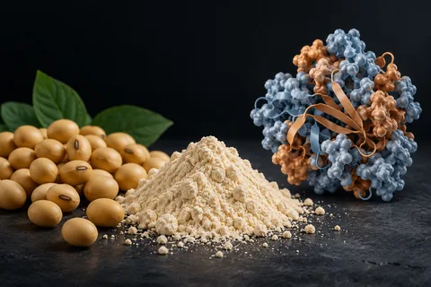
"Whey caseiro" de proteína isolada de soja
Approbation partielleA receita entrega mesmo cerca de 25 g de proteína por dose, mas não é whey: é soja. Para músculo, a diferença é pequena quando a proteína total do dia é suficiente, e a soja não baixou a testosterona nas meta-análises.
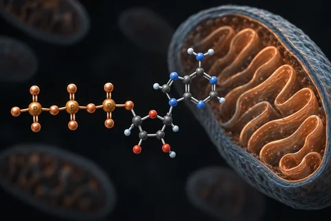
ATP oral (ATP dissódico, PEAK ATP)
Non approuvéO "+147% de força" é a diferença entre os ganhos de 11 e 10 homens num estudo pago em parte pela fabricante e questionado por discrepâncias; tomado por boca, o ATP não aparece no sangue.

Ajustement de dose selon la fonction hépatique
Approbation partielleIci, ce n’est pas seulement une lacune : il y a un dommage documenté, avec chiffre et issue — et il touche exactement ceux que ce site attire

Ajustement de dose selon la fonction rénale
Approbation partielleLà où la donnée existe, la notice dit de ne rien ajuster — et le vrai risque est trois sections plus haut, dans un item que presque personne ne lit
Akarkara (Anacyclus pyrethrum)
Non approuvéOs "+150%" e "+100%" de testosterona livre não aparecem em nenhum estudo; tudo o que existe sobre hormônio e ereção com essa raiz foi feito em ratos.
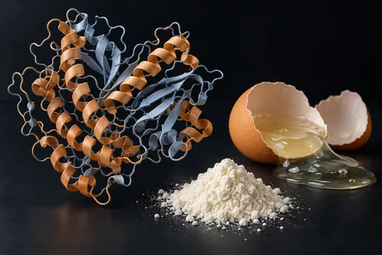
Albumina (clara de ovo desidratada)
Approbation partielleO único estudo de Phillips com ovo que localizei usou ovo inteiro, em 6 homens, sem carne nem whey; e a proteína do ovo cru teve digestibilidade de 51,3%, contra 90,9% cozida.
Alfa-GPC antes do treino ("GH 44 vezes")
Non approuvéO "GH 44 vezes" veio de um resumo de congresso com 7 homens em que o GH de partida do dia da alfa-GPC era dez vezes menor que o do placebo; com o mesmo treino, em 20 homens, o GH não mudou.
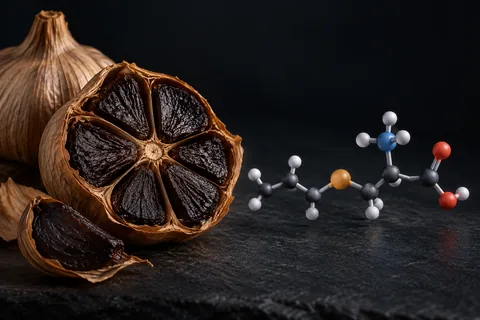
Alho preto e S-alil-cisteína
Non approuvéO estudo japonês de 2021 deu S-alil-cisteína por injeção na barriga de 8 camundongos; em pessoas, ninguém mediu testosterona, e a queda de pressão foi de 1,8 mmHg.

Anticorps monoclonaux
Approbation partielleTrente-cinq fois plus grand qu'un peptide, fabriqué par une cellule vivante et administré en perfusion veineuse — des trois qui apparaissent dans la discussion sur la composition corporelle, un seul a une notice
Ashwagandha (Withania somnifera; extrato KSM-66)
Non approuvéAtrazina na água (herbicida)
Non approuvéOs sapos que "viraram fêmeas" eram 4 de 40, a 2,5 ppb; na água tratada de 22 capitais, a atrazina medida ficou entre 2 e 6 nanogramas por litro.
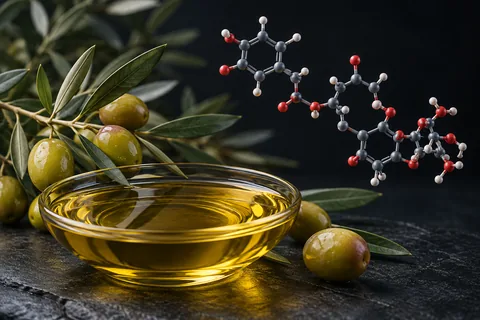
Azeite de oliva extravirgem (oleuropeína)
Non approuvéO "+17,4% de testosterona" vem de um estudo marroquino de 3 semanas sem grupo controle, que não mediu oleuropeína; e acidez de 0,2% não separa extravirgem de refinado.
Açafrão verdadeiro (Crocus sativus, extrato do estigma)
Non approuvéContra antidepressivo, 8 ensaios pequenos não acharam diferença, o que não prova empate; contra placebo, o efeito aparece na escala do paciente, não na do avaliador.
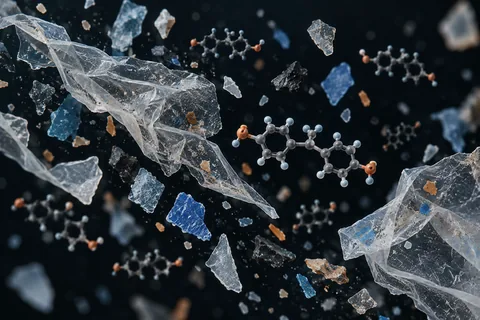
BPA, ftalatos e microplástico (exposição a plástico)
Non approuvéEm homens, mais BPA na urina andou junto com testosterona mais alta, não mais baixa; com ftalatos há associação. Três dias sem comida embalada cortaram o BPA da urina em 66%.
Banho frio e imersão em água fria (LH e testosterona)
Non approuvéNos estudos que mediram, o frio não subiu o LH nem a testosterona: ficaram iguais ou caíram. O "14 °C por 11 minutos" junta dois estudos que não mediram nenhum dos dois.
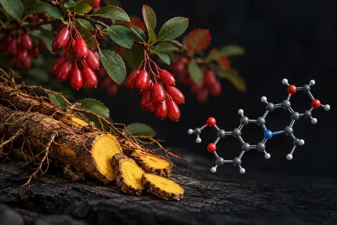
Berberina (cloridrato de berberina)
Non approuvéO estudo de 2008 que "empatou com a metformina" tinha 36 pacientes por 3 meses; nenhum ensaio comparou berberina com semaglutida, e ela inibe enzimas que metabolizam remédios.
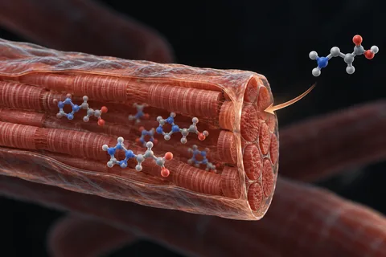
Beta-alanina (carnosina muscular)
Non approuvé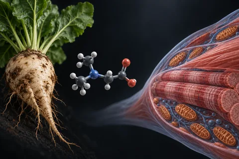
Betaína (betaína anidra, trimetilglicina)
Non approuvéO estudo de 2013 existe e tem os números do vídeo, mas foi pago pela fornecedora da betaína; no Brasil, a betaína não está na lista de constituintes de suplemento.
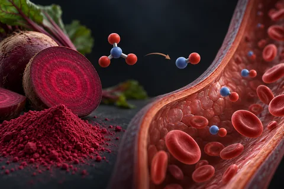
Beterraba em pó e nitrato dietético
Non approuvéO "+33% de ereção noturna" não aparece em nenhum estudo publicado que localizei; no treino, o nitrato da beterraba tem efeito real, mas pequeno.
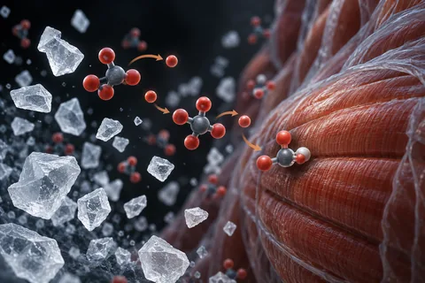
Bicarbonato de sódio (como suplemento de treino)
Non approuvéO "+27% até a exaustão" é de uma meta-análise de 1993; as análises mais novas acham cerca de 2%, e os "7 g" que circulam ficam abaixo da dose mínima eficaz para quase todo adulto.

Biorégulateurs courts de Khavinson
Non approuvéOnze peptides, cinq études cliniques, zéro essai enregistré

Mélanges tout prêts — ce que la combinaison a comme études
Non approuvé32 des 33 mélanges vendus tout prêts ont zéro étude enregistrée. 11 n'ont même pas un article qui cite les composants ensemble
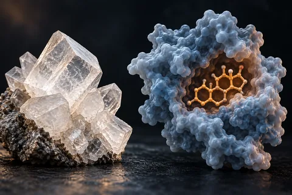
Boro (SHBG e testosterona livre)
Non approuvéO "+28% de testosterona livre" é atribuído a um estudo de 8 homens sem grupo placebo; no Brasil, 10 mg por dia passa do máximo permitido em suplemento.
Bulbine natalensis (Bulbine latifolia)
Non approuvéO "+346% de testosterona" vem de ratos, e as mesmas doses que subiram o hormônio alteraram fígado e rim. Em homens, não há um único estudo de eficácia publicado.
Butea superba (kwao krua vermelho)
Non approuvéO único ensaio publicado perdeu todo o grupo placebo em três semanas, e o único estudo contra o sildenafil achou o remédio misturado no lote "natural".
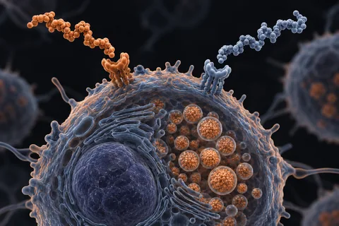
CJC-1295 + ipamorelina (o "GH sem colateral")
Non approuvé
CRISPR
Approbation partielleSur 64 641 articles, 67 sont des essais cliniques et 1 est devenu un médicament — et ce qui limite ce médicament n’est pas l’édition du gène, c’est la chimiothérapie autour d’elle
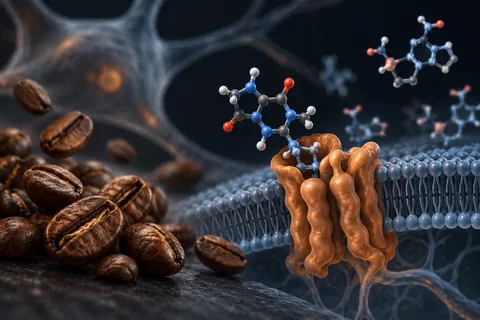
Cafeína (anidra pré-treino e energético diário)
Approbation partielleO "+16% de força" é a velocidade da barra numa só carga, em 14 homens; a força máxima subiu de 4% a 7%. No Brasil, suplemento pode ter até 200 mg por dose.
Calor nos testículos (cueca de poliéster, banco aquecido e notebook no colo)
Non approuvéO estudo dos 14 homens de poliéster existe, mas usou uma funda anticoncepcional, foi reversível e não mexeu nos hormônios; o calor derruba espermatozoide, não testosterona.

Calvitie — l'ancien et ce qui arrive
Approbation partielleDix-huit traitements mesurés à la même aune : le minoxidil a 23 enregistrements actifs comme antialopécique, et le PP405, qui circule comme poudre de recherche, a 1 article sur PubMed

Casgevy
Approbation partielleLe goulot déclaré n’est pas le prix — en Angleterre, ce sont 1 794 éligibles et 23 traitements la première année, et le motif que l’évaluateur écrit est l’hospitalisation, pas le coût
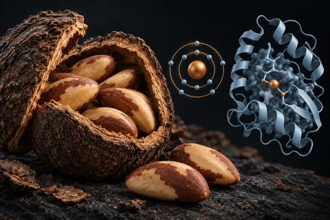
Castanha-do-pará e selênio
Non approuvéDuas castanhas renderam 53 µg de selênio num ensaio, mas o teor vai de 2,07 a 68,15 mg por kg conforme a região do Brasil.
Celular no bolso e notebook no colo (radiofrequência e calor)
Non approuvéO "−21% de concentração" do estudo suíço não está no artigo, e o celular no bolso não se associou a sêmen pior; o que o notebook no colo comprovadamente faz é esquentar o escroto.
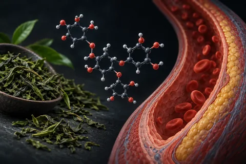
Chá verde (adjuvante da mucuna)
Non approuvéO chá verde entra no protocolo da mucuna "para o fluxo", sem dose; o que existe são catequinas que melhoram pouco a dilatação das artérias, e extrato concentrado que mexe no fígado.
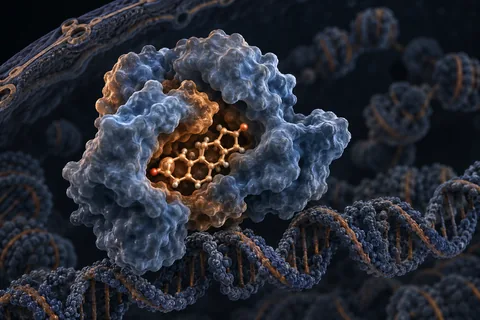
Cipionato de testosterona (Deposteron) e reposição hormonal (TRT)
Approbation partielleA cronologia de 30 dias que circula não bate com os estudos: o interesse sexual começa em 3 semanas e a massa magra muda em 12 a 16, e no Brasil é vedado prescrever testosterona para estética.
Cistanche (Cistanche deserticola e Cistanche tubulosa)
Non approuvéO estudo dos "636 para 773 ng/dL" existe, mas os dois números são placebo e cistanche no fim do teste, não antes e depois; o "+44,6%" não está nele.
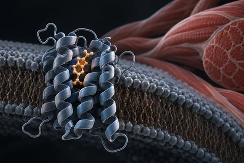
Clenbutérol
Non approuvéNos dois ensaios randomizados em humanos, o clembuterol aumentou massa magra e não reduziu gordura mais que o placebo; o estudo de 2025 citado como prova de "queima de gordura" diz o contrário.
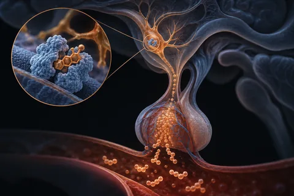
Clomifeno (citrato de clomifeno, Clomid)
Non approuvéO "+146%" existe, em estudos pequenos e sem grupo controle; no homem, o clomifeno não tem indicação em bula, e a versão purificada teve o registro recusado na Europa.
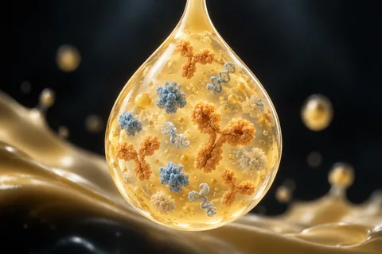
Colostro bovino
Non approuvéNo Brasil, suplemento de colostro pode ter no máximo 4 g por dia; os estudos de treino usaram de 10 a 60 g, e na maioria o IGF-1 do sangue não subiu.
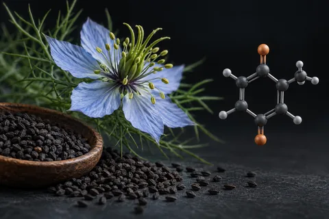
Cominho-preto (Nigella sativa; timoquinona)
Non approuvéO estudo iraquiano existe, mas durou 3 meses, não 6, e a testosterona subiu 29%; os 59% eram da motilidade dos espermatozoides.
Cordyceps (Ophiocordyceps sinensis e Cordyceps militaris)
Non approuvéNenhum ensaio humano testou o cordyceps em ereção ou testosterona; no treino, a meta-análise de 2025 achou ganho aeróbio pequeno, com p = 0,05 na resistência.
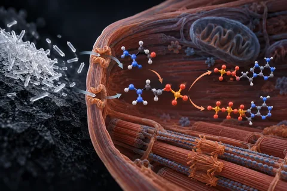
Creatina (monoidratada)
Approbation partielleO "8% a 14% a mais de força" existe e vem de uma revisão de 2003; a saturação de 15 a 20 g por dia passa de 3 a 4 vezes o máximo diário permitido em suplemento no Brasil.
DDT e DDE na dieta (os jacarés do Lago Apopka)
Non approuvéOs jacarés do Lago Apopka tiveram pênis 24% menor e testosterona 70% mais baixa; em homens expostos ao DDE, a testosterona apareceu mais baixa, igual ou até mais alta, conforme o estudo.
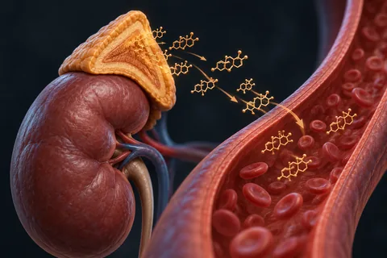
DHEA (deidroepiandrosterona, prasterona)
Non approuvéO DHEA sobe o IGF-1, mas em homens jovens que treinavam não aumentou força nem massa magra além do placebo, e num ensaio de 2 anos em idosos não melhorou músculo, desempenho nem qualidade de vida.
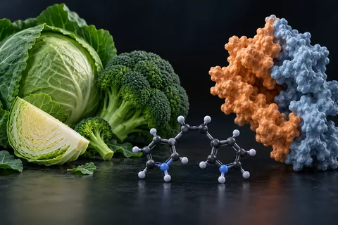
DIM (3,3'-di-indolilmetano)
Non approuvéO "−76% de estrogênio" não aparece em nenhum estudo de DIM que localizei; no maior ensaio, o DIM subiu a SHBG, a proteína que prende a testosterona no sangue.

Maladie rénale
Approbation partielleDe zéro à six médicaments en quatre ans et demi — et cinq d’entre eux ont été approuvés sur un chiffre qui n’est pas celui qui intéresse le patient
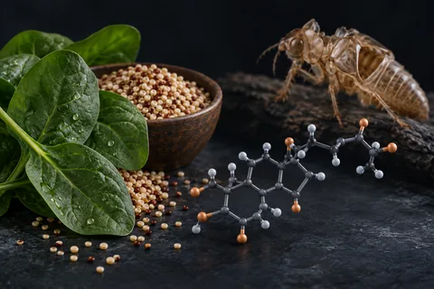
Ecdisterona (20-hidroxiecdisona; inclui turquesterona)
Non approuvéO estudo alemão que deu fama à ecdisterona usou 12 e 48 mg por dia, melhorou o supino e não o agachamento; a agência antidoping a monitora, não a proíbe.
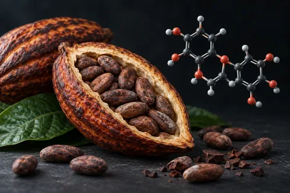
Epicatequina ((−)-epicatequina; extrato de cacau)
Non approuvéO estudo de 2013 que "derrubou a miostatina" tratou 6 pessoas por 7 dias, sem placebo; num ensaio de 4 semanas, a epicatequina não mexeu na miostatina do músculo.
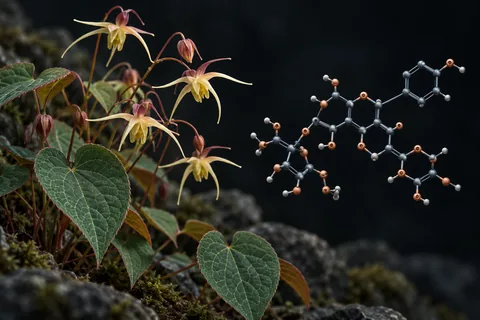
Epimedium (icariina, "horny goat weed")
Non approuvéA prova de que a icariina age como a tadalafila vem de enzima isolada e de ratos; tomada por boca, ela ficou abaixo do limite de detecção no sangue em dois estudos humanos.
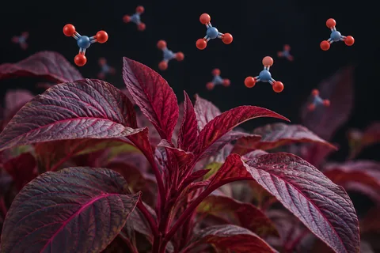
Espinafre vermelho (red spinach, Amaranthus) e nitrato
Non approuvéNa única meta-análise que separou as fontes, a beterraba melhorou o desempenho e o espinafre vermelho não; o extrato usado nos estudos tem cerca de 90 mg de nitrato por grama.

Exosomes
Non approuvé45 674 articles, 83 essais randomisés et aucun produit approuvé par aucune agence
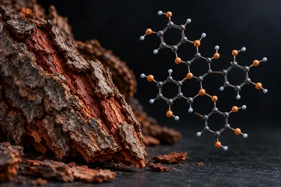
Extrato de casca de pinheiro-marítimo (procianidinas)
Non approuvéO "+230% de óxido nítrico" não aparece em nenhum estudo que localizei, e o 92,5% vem de um estudo de 2003 sem grupo controle e com arginina junto.
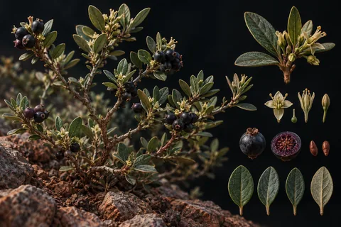
Fadogia agrestis (Vangueria agrestis)
Non approuvéNenhum estudo em humanos; o artigo do mesmo grupo nigeriano na revista citada nos vídeos mostra efeito adverso no testículo de ratos, não aumento de testosterona.
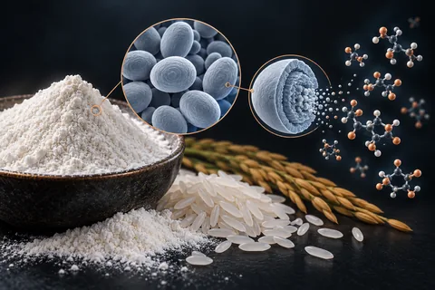
Farinha de arroz no shake (carboidrato pós-treino)
Non approuvéFarinha de arroz é carboidrato comum e funciona como caloria; o "pico de insulina que joga aminoácidos na fibra" não aumentou a síntese de músculo quando já havia proteína suficiente.
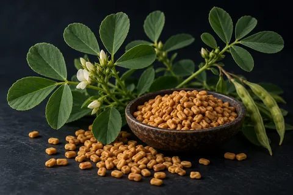
Feno-grego (fenogreco, Trigonella foenum-graecum)
Non approuvéO "+37% acima do placebo" é testosterona na saliva; no sangue, o mesmo ensaio de 95 homens não diferiu do placebo. O "+46%" vem de estudo sem grupo controle.
Flúor na água e glândula pineal (filtros de água e de chuveiro)
Non approuvéO flúor se acumula na calcificação da pineal de idosos, num estudo de 11 cadáveres; nenhum estudo em gente mediu melatonina, e o filtro de carvão de fato não tira fluoreto.
Forskolina (Coleus forskohlii)
Non approuvéO "+33,77% de testosterona" é o desvio padrão do estudo de Kansas, não o efeito: a média subiu 16,77%, sem diferença estatística contra o placebo, em 15 homens.
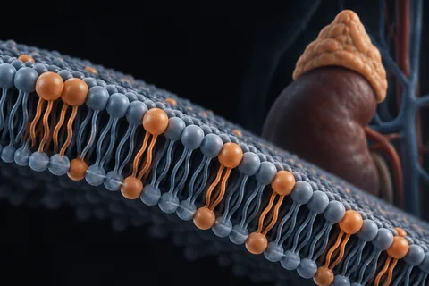
Fosfatidilserina (cortisol e testosterona)
Non approuvéO "+37% de testosterona" é de 10 homens pedalando 15 minutos, numa medida em que o pico da testosterona não diferiu do placebo; a pesquisa foi paga pela empresa de dois autores.
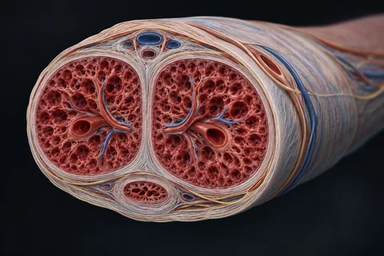
Fáscia de Buck e o "protocolo de perfusão"
Non approuvéO vídeo não descreve a técnica. A fáscia de Buck existe e envolve os corpos do pênis, mas nenhum artigo a liga a bloquear vasos, e nenhum ensaio testou manipulação manual para ereção ou tamanho.

Foie et lipides
Approbation partielleTreize molécules avec un nombre à deux chiffres d'articles sur PubMed et des essais de critère de jugement portant sur jusqu'à 17 300 participants — et une seule d'entre elles, l'inclisiran, a un enregistrement actif
GABA oral e o "+400% de GH"
Non approuvéO "+400% de GH" existe: veio de 11 homens que tomaram 3 g de GABA uma vez, em jejum; no Brasil, o máximo permitido em suplemento é 300 mg por dia.

GH et myostatine — ce qui manquait encore
Non approuvéLe PEG-MGF a 5 articles et 0 étude. La follistatine vendue en flacon n'a jamais été testée chez l'humain — ce qui existe dans les registres, c'est de la thérapie génique. L'ACE-031 a été arrêté pour des raisons de sécurité
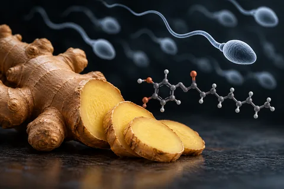
Gengibre e fertilidade masculina (Zingiber officinale)
Non approuvéO "LH +43%" existe, num estudo iraquiano sem placebo que não diz dose nem forma; o único ensaio com placebo, em 100 homens, não mudou contagem nem motilidade.

Géroprotecteurs
Approbation partielleDix-sept candidats pour retarder le vieillissement : 6 n'ont pas un seul essai de phase 3 enregistré, et 8 des 13 principes actifs recherchés n'ont pas d'enregistrement actif
Ginseng vermelho coreano (Panax ginseng; ginsenosídeos)
Non approuvéA revisão Cochrane de 9 ensaios e 587 homens achou efeito trivial do ginseng na ereção; a "fibrose desfeita" e o "+230% de óxido nítrico" não têm estudo humano.
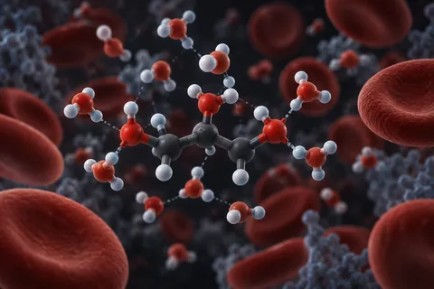
Glicerol em pó (hiper-hidratação)
Non approuvéA agência antidoping tirou o glicerol da lista em 2018 porque o efeito no volume de sangue era "mínimo", não porque a detecção melhorou; e o estudo de 1990 do grupo citado viu suor maior, não menor.
Glicina antes de dormir (sono e GH)
Non approuvéO "70% do GH" não é aumento: é a parte do GH do homem que sai no começo do sono; nenhum estudo de glicina antes de dormir mediu GH.
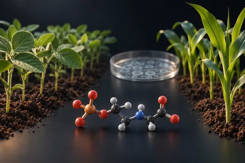
Glifosato e alimentos transgênicos
Non approuvéO "−35% de testosterona" vem de células de rato numa placa de cultura; em homens, nenhum estudo ligou glifosato ou transgênico a testosterona baixa.

GnRH et gonadotrophines — les analogues qui ont une notice
Approbation partielleLa triptoréline, la leuproréline et la goséréline ont 86, 124 et 125 essais de phase 3 enregistrés, dans le cancer et la fertilité. Dans les enregistrements des cinq recherches, aucun ne porte sur la récupération après anabolisants
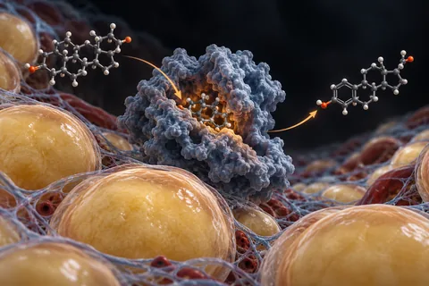
Gordura corporal, "pênis enterrado" e aromatase
Non approuvéEm 778 homens, o IMC só se associou ao comprimento medido a partir da pele, não do osso: a gordura esconde, não encolhe. Os "2,3 cm" e "1 a 3 cm a cada 10 kg" não estão nas fontes citadas.
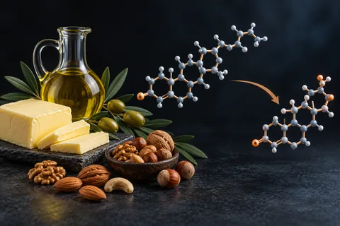
Gordura na dieta e testosterona (a "diretriz de 1977")
Non approuvéEm ensaios pequenos, dietas com 25% de gordura ou menos deixaram a testosterona 12% a 13% menor; o "21% em 1996" não está no estudo de 1996, e a meta de 1977 era 30% de gordura, não zero.
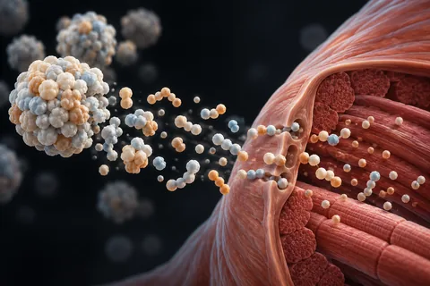
Hidrolisado de caseína (PeptoPro)
Approbation partielleO estudo de Maastricht citado existe: o hidrolisado chegou ao sangue 27% mais rápido que a caseína inteira, mas a síntese muscular não diferiu, e em outro estudo do mesmo grupo o whey ganhou dos dois.
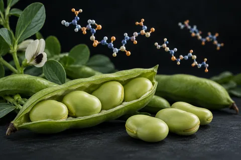
Hidrolisado de proteína de fava (PeptiStrong, NPN_1)
Non approuvéOs três ensaios em humanos têm funcionários da fabricante entre os autores; 47%, 136% e "4 vezes o whey" não aparecem neles, e 24,5% e 21,6% não tiveram significância.
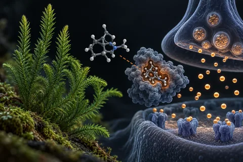
Huperzina A ("dobro de força" em 7 dias)
Non approuvéNenhum estudo mediu força com huperzina A; o ensaio financiado pelo instituto americano do envelhecimento, com 210 pacientes de Alzheimer, falhou no desfecho principal.

Incrétines et amylines de nouvelle génération
Approbation partielleTreize molécules qui se disputent la place de la sémaglutide — 11 ont déjà un essai de phase 3 enregistré, et 9 des 11 dont la DCI est publiée n'ont pas un seul enregistrement actif

Intestin — les analogues du GLP-2 et le larazotide
Approbation partielleLa phase 3 des analogues du GLP-2 porte sur le syndrome de l'intestin court, pas sur l'intestin perméable. Le seul essai de phase 3 du larazotide a été arrêté par le promoteur — et la recherche à son nom renvoie des enregistrements d'un médicament de la maladie de Fabry
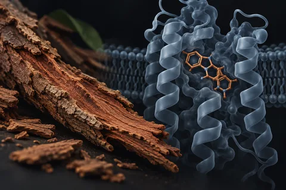
Ioimbina (cloridrato de ioimbina; casca de Pausinystalia)
Approbation partielleO estudo de 86 homens com 71% contra 45% existe; o que não se diz é que, na disfunção de causa orgânica, a ioimbina mal supera o placebo.

Items sur ordonnance de la liste
Approbation partielle13 médicaments qui apparaissaient mélangés à des compléments
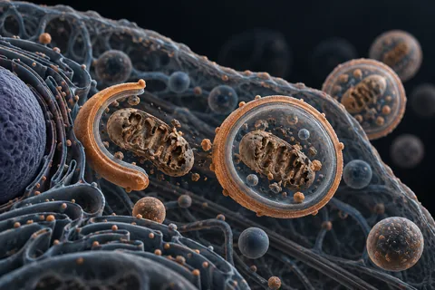
Jejum de 24 horas e jejum intermitente de 16 horas (GH, autofagia e testosterona)
Non approuvéO "+2.000% de GH" veio de uma notícia sobre um congresso; o estudo publicado tinha 30 voluntários, só 10 homens, e o GH deles partia de quase zero.

KLOW — les preuves
Non approuvéLe mélange reste sans essai, mais trois composants sont entrés en phase clinique en 2026
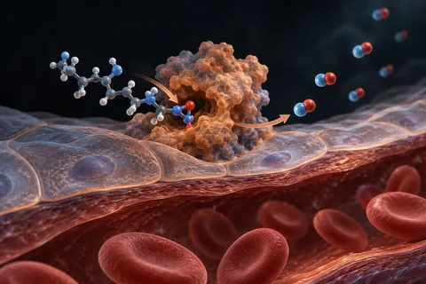
L-arginina (inclui aspartato e cloridrato de arginina)
Non approuvé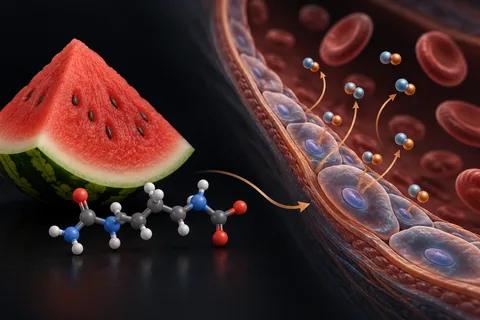
L-citrulina (inclui citrulina malato)
Non approuvéO único ensaio de L-citrulina sozinha em disfunção erétil tem 24 homens, usou 1,5 g por dia e não mediu o tamanho do pênis.
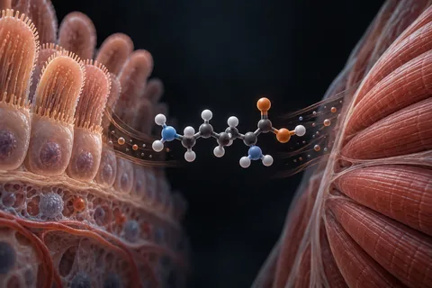
L-glutamina e hormônio do crescimento
Non approuvéO estudo de 1995 existe: 9 pessoas, 2 g num refrigerante, sem bebida placebo; o resumo diz só que o GH estava "elevado" aos 90 minutos, e o efeito nunca virou músculo em quem treina.
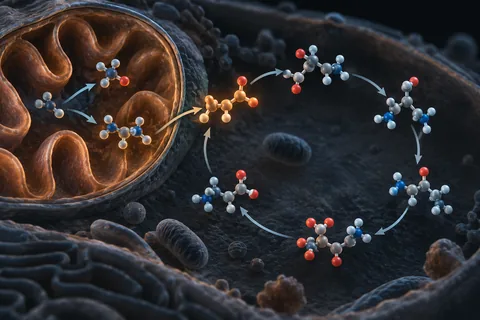
L-ornitina (cloridrato de L-ornitina)
Non approuvéO estudo de 1990 citado nos vídeos deu a dose em jejum de manhã, não à noite; o "2,7 vezes" de 1981 é de arginina com lisina, sem ornitina.
Limosilactobacillus reuteri (cepa ATCC PTA 6475)
Non approuvéOs testículos maiores e a testosterona alta são de camundongos; no único ensaio com placebo em homens de 55 a 65 anos, a mesma cepa não mudou a testosterona.
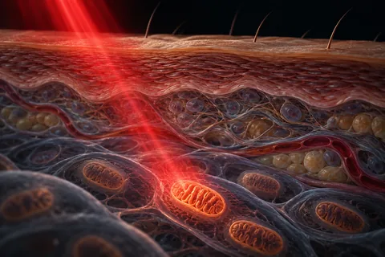
Luz vermelha (fotobiomodulação, 660–670 nm) e luz azul de LED
Non approuvéO "+33,5% de testosterona" com laser não foi localizado; no único ensaio randomizado que mediu testosterona após luz no corpo inteiro, ela não mudou.
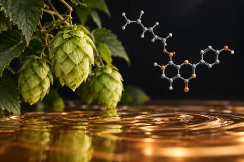
Lúpulo, 8-prenilnaringenina e cerveja sem álcool (fitoestrógeno)
Non approuvéO 8-PN do lúpulo é potente no tubo de ensaio, mas a maioria das cervejas nem tem quantidade detectável; no único ensaio comparado, a testosterona caiu com a cerveja com álcool, não com a sem álcool.
Maca peruana (Lepidium meyenii)
Non approuvéAqui o vídeo acerta o principal: em ensaios controlados, a maca melhorou o desejo sem mexer na testosterona. Mas os ciclistas não bateram o placebo, e a fertilidade não se confirmou.
Magnésio (treonato e cloreto P.A.)
Non approuvéO "+24% de testosterona livre" não está no resumo do estudo citado, o "P.A." do cloreto é grau de reagente e, no Brasil, o máximo em suplemento é 350 mg por dia.
Maitake (Grifola frondosa) e glicose
Non approuvéOs "30% a 63%" vêm de 7 voluntários sem grupo controle, que também tomavam remédio para diabetes; não há ensaio randomizado de maitake em diabetes no PubMed.

Mazdutide
Non approuvé12 essais de phase 3, publication dans le NEJM, le JAMA et Nature — et aucune notice

Médicaments d’Europe de l’Est
Approbation partielle18 importés, 29 essais enregistrés — et un historique de décès oublié

Meldonium (mildronate)
Approbation partielle357 articles, 7 essais enregistrés — et une fenêtre de détection de plusieurs mois

Métabolisme et graisse — exénatide, AICAR, CBL-514 et autres
Approbation partielleL'exénatide a 93 essais de phase 3 et zéro enregistrement actif au Brésil. L'oxyntomoduline, zéro de phase 3. Le CBL-514 a 7 articles et 16 études enregistrées, toutes de la même entreprise
Moringa (folha de Moringa oleifera)
Non approuvéMucuna pruriens (feijão-veludo; fonte de L-dopa), com vitamina B6 e chá verde
Non approuvéO "+878% de GH" é de 15 homens, sem placebo, com uma mistura de duas plantas, e o pico não passou de 2 ng/mL. E a vitamina B6 junto anula o efeito da L-dopa.
Muira puama (Ptychopetalum olacoides, marapuama)
Non approuvéO "62% em 14 dias" vem de uma apresentação em congresso de 1990 que não está no PubMed; nenhum ensaio com placebo testou a raiz sozinha, e no Brasil não há produto ativo.

Muscle, os, axe HPG et immunité
Approbation partielleQuinze molécules que les discussions sur les peptides citent comme si elles étaient équivalentes aux flacons de recherche — 6 des 14 recherchées ont un enregistrement actif, avec nom commercial et classe thérapeutique déclarée
NAC (N-acétylcystéine)
Non approuvéA FDA mandou cartas a 7 empresas de produtos "contra ressaca" em 2020, não a centenas; no Brasil, NAC é remédio e também fonte de cisteína em suplemento.

Neuro et cognition — le bloc russe et ce qui a une notice
Approbation partielleNoopept, phénylpiracétam, bromantane et cortexine totalisent 0 étude enregistrée sur ClinicalTrials.gov ; le lécanémab et le donanémab ont déjà un enregistrement actif

Neuro — les formes acétylées et ceux qui se sont arrêtés en phase 3
Non approuvéLe Semax et le Selank "N-acétyl amidate" ont 6 et 2 articles et zéro étude enregistrée. Le rapastinel a eu 10 essais de phase 3 et a été abandonné ; le davunétide n'a pas fait mieux que le placebo
Niacina (ácido nicotínico) e hormônio do crescimento
Non approuvéO estudo de 2008 existe: 7 homens, 2 g de ácido nicotínico em 4 horas, e o GH do segundo sprint triplicou em relação ao primeiro. No Brasil, o máximo diário em suplemento é 35 mg.
NoFap: abstinência de pornografia e masturbação ("jejum de dopamina")
Non approuvéNum ensaio de 7 dias sem pornografia, ninguém teve sintoma de abstinência; o estudo do "pico de testosterona no 7º dia" foi retratado em 2021.

Nootropiques
Approbation partielle32 avec des preuves humaines, 12 sans aucun essai — et quatre décomptes qui étaient gonflés

L'axe de la GH en dehors du flacon de peptide
Approbation partielleL'hormone recombinante a 54 472 articles, 183 essais de phase 3 et 9 enregistrements actifs ; les sécrétagogues que la communauté utilise à sa place ont zéro enregistrement actif

Les GLP-1 face à la notice
Approbation partielleLes doses étaient justes. L’encadré noir manquait
Oximetolona (Hemogenin, Anadrol-50)
Non approuvéParabenos e ftalatos em shampoo e cosméticos
Non approuvéO "99,1%" existe, mas é de urina de americanos de todas as idades, não de sangue de homens; o butilparabeno baixou testosterona em ratos, e em homens os estudos não concordam.

Peptides cosmétiques — argireline, Matrixyl et compagnie
Non approuvéL'argireline, la plus étudiée, a 50 articles et 6 études — celles qui indiquent la voie dans le titre portent sur des crèmes et des sérums. 6 des 10 noms ont 4 articles ou moins sur PubMed

Peptides de paillasse — SS-20, SHLP-2, SHLP-3 et PNC-27
Non approuvéLes quatre totalisent 77 articles et zéro étude enregistrée sur ClinicalTrials.gov. Le PNC-27 apparaît dans une boutique décrit comme antitumoral, sans un seul essai chez l'humain
Peptídeos de colágeno para músculo (Body Balance)
Non approuvéO estudo de Freiburg de 2015 existe, mas a gordura caiu 5,4 kg contra 3,5 kg no placebo, não o triplo; e só em 2025 o artigo declarou que um autor tem pedido de patente do ingrediente.
Pfaffia paniculata ("ginseng brasileiro", Hebanthe eriantha)
Non approuvéNenhum estudo em gente testou o "ginseng brasileiro" para músculo, libido ou diabetes; em camundongos, uma Pfaffia baixou a testosterona e piorou o sêmen.
Placebo, nocebo e a "reprogramação de crença"
Non approuvéEm 63 ensaios com 12.564 homens, o placebo melhorou a ereção com efeito pequeno a moderado, e o remédio com efeito grande. O nocebo é real. O "protocolo de Harvard em 4 etapas" é um roteiro publicado inteiro.
Pré-treino caseiro (guaraná, canela, gengibre e cafeína anidra)
Non approuvéPela própria receita, uma medida de 10 g leva de 345 a 481 mg de cafeína, e o saco de 20 g de cafeína pura passa da faixa que a FDA considera potencialmente letal.

Réparation au-delà du BPC et du TB-500
Non approuvéLa thymosine β-4 a 4 essais de phase 3 — et ce sont des collyres pour l'œil sec, pas de la réparation musculaire ; l'AHK-Cu a 1 article sur PubMed
Respiração lenta e diafragmática (hipocapnia, efeito Bohr e ereção)
Non approuvéRespiração lenta reduz estresse e ansiedade em ensaios, com efeito pequeno. O "40% a menos de oxigênio" é do fluxo do cérebro em hiperventilação forte, não do pênis.
Respiração nasal no sono (óxido nítrico, testosterona e fita na boca)
Non approuvéO nariz entrega 4 a 6 vezes mais óxido nítrico que a boca, não 25, e a boca não chega a zero. Esse gás age no pulmão; nenhum estudo o liga à testosterona.
Retatrutida (LY3437943)
Non approuvéRhodiola e ginseng siberiano (Rhodiola rosea e Eleutherococcus senticosus)
Non approuvéO "+12% de VO2 máximo" do ginseng siberiano vem de 9 homens em Taiwan, não de Moscou; os estudos mais rigorosos com a planta não acharam ganho no exercício.
Ronco e apneia obstrutiva do sono (testosterona, CPAP e perda de peso)
Non approuvéHomens com apneia têm testosterona mais baixa, e o CPAP sozinho não a sobe nas meta-análises. Mas o CPAP trata a apneia; somar perda de peso subiu a testosterona em 77,6 ng/dL.

SARM
Non approuvéLa moitié des produits vendus comme SARM ne contiennent pas le SARM de l’étiquette — et quatre des plus populaires n’ont jamais eu d’essai clinique
Sal e potássio pré-treino (inclui sal rosa, sal integral e glicerol)
Non approuvéNenhum estudo mediu "pump" com sal antes do treino de força; o sal rosa precisaria de mais de 30 g por dia para dar potássio que conte, e a pressão sobe com sal em quem treina também.
Schisandra (Schisandra chinensis, wu wei zi)
Non approuvéA visão noturna e a fome suprimida dos caçadores são tradição; os dois ensaios com a fruta sozinha mediram força de perna em mulheres e idosos, e o maior risco documentado é interação com remédio.

Semax — les preuves
Approbation partielleLa dose des essais russes est de 12 à 72 fois celle de la communauté
Shilajit (mumijo, resina mineral)
Non approuvéO "+23,5%" não é do ensaio controlado que os vídeos descrevem: é de um estudo sem placebo com homens inférteis. E parte das amostras analisadas tinha chumbo, arsênio e mercúrio acima do limite.
Solidão e isolamento social (cortisol, testosterona, músculo e mortalidade)
Non approuvéIsolamento social anda junto com 32% mais mortalidade em 90 coortes. Sobre testosterona, o dado humano é escasso, e homens com parceira fixa têm testosterona mais baixa, não mais alta.
Sono: temperatura do quarto, horário e telas (GH e testosterona)
Non approuvéUma semana dormindo 5 horas baixou a testosterona diurna de 10 jovens em 10% a 15%; o "60% da recuperação hormonal" e a "janela de 40 minutos" não aparecem em estudo.
Tadalafila de uso diário (5 mg)
ApprouvéA tadalafila diária é remédio aprovado e funciona, mas não "limpa artéria", não supera com folga o uso sob demanda e não previne encolhimento fora da cirurgia de próstata.

Taille d’effet
Approbation partielleCombien d’essais existent est une question ; ce qu’ils ont trouvé en est une autre — 34 méta-analyses ouvertes

Thymalin
Approbation partielleExtrait thymique russe — 293 articles, 13 essais, zéro enregistrement

Thymus et Cardiogen — thymuline, thymopentine et le biorégulateur du cœur
Non approuvéLa thymuline a 886 articles et zéro étude enregistrée. La thymopentine a des enregistrements dans le VIH sous le nom commercial Timunox. Le Cardiogen partage son nom avec un générateur de rubidium utilisé en examen cardiaque
Tirzepatida (Mounjaro) semana a semana
ApprouvéNo estudo citado nos vídeos, quem trocou a tirzepatida por placebo voltou a ganhar peso mesmo recebendo orientação de dieta e exercício; o "14%" é do peso corporal, não do peso perdido.
Tongkat ali (Long Jack, Eurycoma longifolia)
Non approuvéO "+581% de testosterona livre" não aparece em nenhum estudo que localizei; no ensaio com 600 mg, a SHBG e o LH não mudaram e o estradiol subiu.

Traitements qui ne sont pas des substances
Approbation partielleCinq procédures qui rivalisent avec les flacons de ce site et totalisent 69 593 articles sur PubMed et 5 349 études enregistrées
Tração peniana e aparelho de vácuo (e "soltar o ligamento suspensor")
Non approuvéTração diária ganhou em média 1,3 a 2,3 cm em estudos com Peyronie, pós-prostatectomia e queixa de pênis curto; o vácuo não aumentou o tamanho. Os "2 a 5 cm" e o "37%" não estão em estudo.
Treino acima do limiar de lactato ("finisher") e GH
Non approuvéOs 10 minutos acima do limiar de lactato subiram o GH de 10 homens em 1992; o estudo de 1999 citado nos vídeos achou subida em linha reta com a intensidade, sem limiar.
Ultraprocessados, açúcar e álcool (dieta e testosterona)
Non approuvéO álcool frequente baixa a testosterona em meta-análise; o "40% de queda" da toxina intestinal é de outro estudo; e não há ensaio que teste "zerar" açúcar para subir hormônio.
Vinagre de maçã em jejum
Non approuvéO vinagre baixa um pouco o pico de glicose depois de uma refeição; o ensaio que prometia grande perda de peso foi retratado em 2025, e parte da saciedade vem de náusea.
Vitamina B6 (piridoxina), adjuvante da mucuna
Non approuvéA B6 não protege a L-dopa da mucuna: acelera a perda dela. E o máximo diário em suplemento no Brasil, 98,60 mg, é mais de oito vezes o limite seguro fixado na Europa em 2023.
Vitamina D e exposição ao sol (testosterona)
Non approuvéO "+25,2% de testosterona" vem de 54 homens analisados em 2011; o mesmo grupo de Graz testou de novo, com placebo, e não achou efeito.
Zerar o açúcar por 30 dias (a cronologia dos vídeos)
Non approuvéTrês dias sem refrigerante deram fissura e dor de cabeça em 25 adolescentes; mas o paladar só mudou no 2º e 3º mês num ensaio, e em outro, de 6 meses, não mudou.
Zinco (inclui ostra e alimentos ricos em zinco)
Non approuvéO estudo de 1996 existe, mas a testosterona subiu em 9 idosos com falta de zinco e sem grupo placebo; em homens sem deficiência, os ensaios não acham efeito.
Ácido D-aspártico (D-aspartato, DAA)
Non approuvéOs "+42% em 12 dias" vêm de 23 homens saudáveis com testosterona normal, não baixa; quatro ensaios depois disso não repetiram o efeito, e 6 g por dia derrubaram a testosterona.
Ácido ursólico (casca de maçã)
Non approuvéO estudo da PLOS ONE citado como prova de "−40% de gordura" foi feito em camundongos e não traz esse número; em homens que treinam, 400 mg por dia não somaram músculo.

Alcool et stéatose
Approbation partielleLa cause de fond qu’aucun bilan hépatique ne voit — et qui multiplie, au lieu d’additionner, le risque de tout le reste que l’on prend
Óleo de semente de abóbora (Cucurbita pepo) e beta-sitosterol
Non approuvéO "+40% de fios contra +10% no placebo" existe, num único ensaio coreano de 76 homens pago pelo fornecedor da cápsula; a DHT não foi medida e a extração não foi descrita.
Compléments et apparentés
Items en vente libre, avec la plage de dose utilisée dans les études. Séparés de ceux qui exigent une ordonnance.